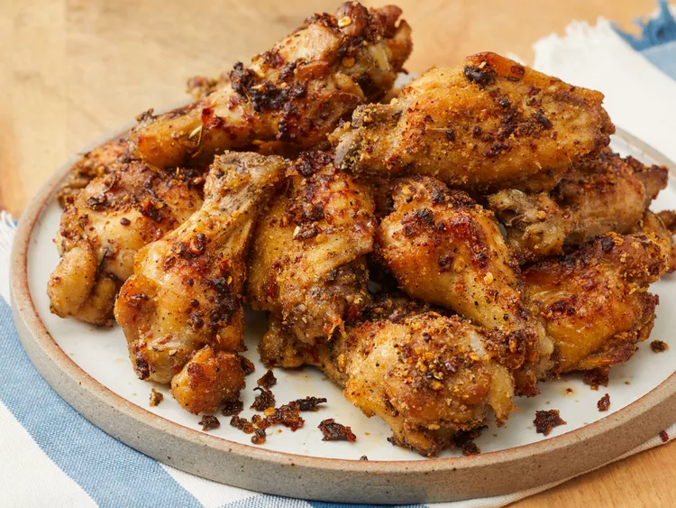

Mouth Watering Garlic Parmesan Chicken Wings

About this dish
These baked garlic Parmesan wings are super crispy because the chicken is cooked in a flavorful liquid before baking, which helps season them and produce a texture in the oven that your guests will swear came straight out of a deep fryer.
Ingredients
- cooking spray
- 3 quarts cold water
- ⅓ cup balsamic vinegar
- ¼ cup salt
- 1 bay leaf
- 1 teaspoon dried thyme
- 1 teaspoon dried oregano
- 1 teaspoon dried rosemary
- 8 cloves garlic, minced
- 1 pinch salt
- 3 tablespoons olive oil, or as needed
- 1 tablespoon freshly ground black pepper
- 2 teaspoons red pepper flakes, or to taste
- 4 pounds chicken wings, separated at joints, tips discarded
- 2 tablespoons fine bread crumbs
- 1 cup finely grated Parmigiano-Reggiano cheese, divided
Back to Home